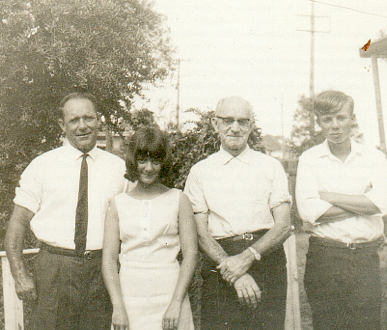

oscar ernest stait

Grandfather was a difficult man to get to know and the occasional visits we had with him were tense occasions. He was a tough man and his relationship with his son John was strained. However, I remember a few snippets from Dad.
Before the Depression he had built a house in Lithgow. When he was laid off from the small arms factory in Lithgow during the Depression the only job he could get was as a butcher at Wallerawang. He used to ride his horse there every day and home at night. A journey of about 30 kilometres each way.
He was a very good axeman and could build well in rough timber hewn with an adze. he built the big shed behind his house in Smithfield.
He fought on the Western Front in France during World War ! at Passchendaele and Villers-Brettonoux. It was a dreadful war and he never spoke about it but it must have left a terrible psychological scar with him. He was gassed at Villers-Brettonoux but he recovered and was a very fit and active man all his life.
He used to give Geoff and I two bob when we visited him. Dad said we were lucky.

What you should know
Oscar Ernest Stait was born on the 5th April 1889 in Sunny Corner, NSW. He was the son of John Oscar Stait and Jane Thompson. He had been working a a carrier and butcher’s assistant prior to his marriage to Margaret Edgar in August 1916. He married shortly after he had joined the AIF on the 25th July 1916 at Portland, New South Wales . He embarked for World War ! aboard the “HMAS Ascanius” on the 25th October 1916 as a member of the 7th Reinforcements for the 54th Battalion. After the war he worked in the small arms factory in Lithgow but returned to Portland, NSW and became a butcher during the Depression.He later moved to Smithfield, NSW and continued work as a butcher. He had two children Marjorie Jack born 2 July 1917 while he was at war and John Edgar born 19th Mar 1920. His wife Margaret Edgar died in 1940 and he subsequently married Esther Kelly in 1946. He died aged 95 in 1984 after falling from a bus while on a bus trip to Adelaide.
John Stait, Margaret Stait, Oscar Ernest Stait, Geoffrey Stait (1965)
Flanders Poppies 2005 France
I took this photo for Grandfather as it is a symbol used on Anzac Day in memory of those who died on the Western Front in WW1.